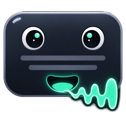
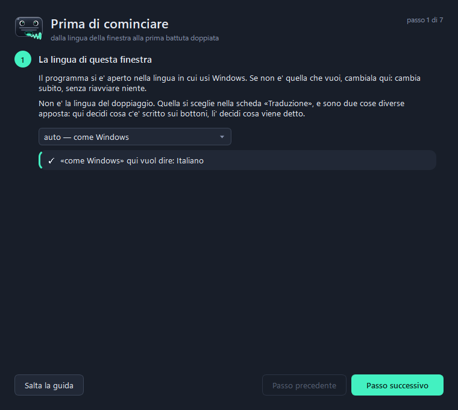
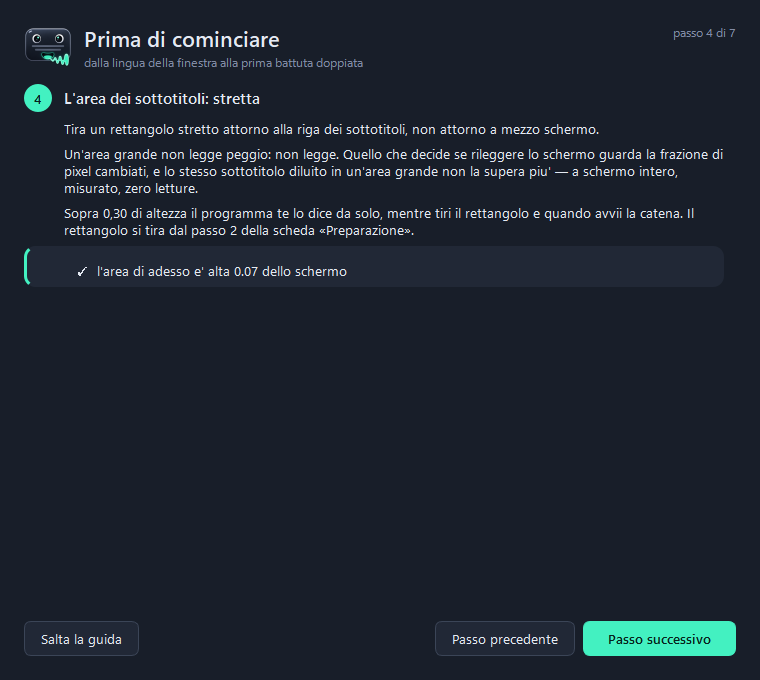
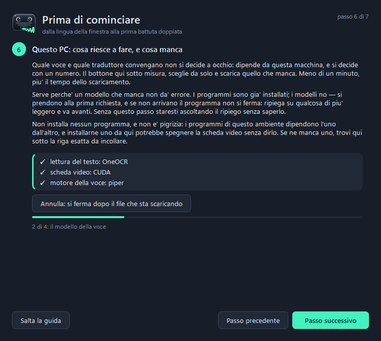
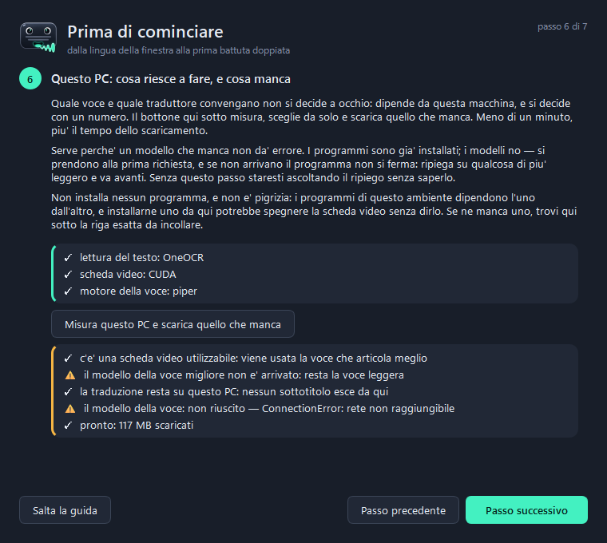
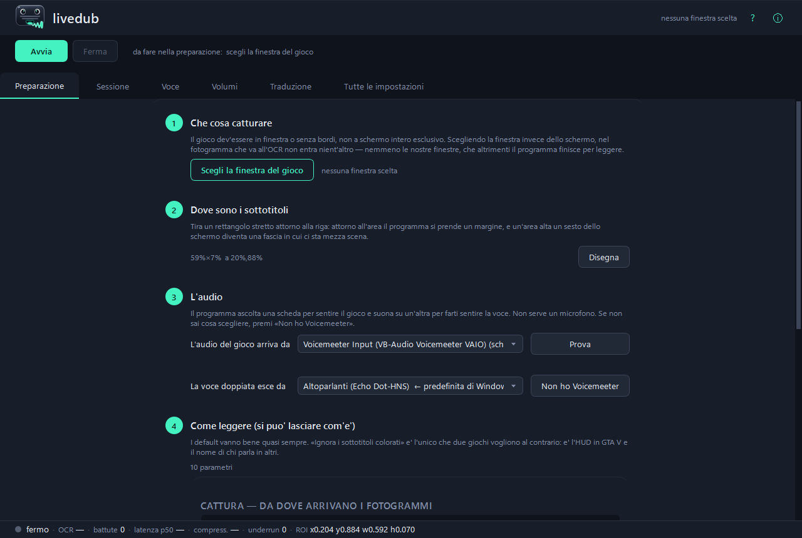
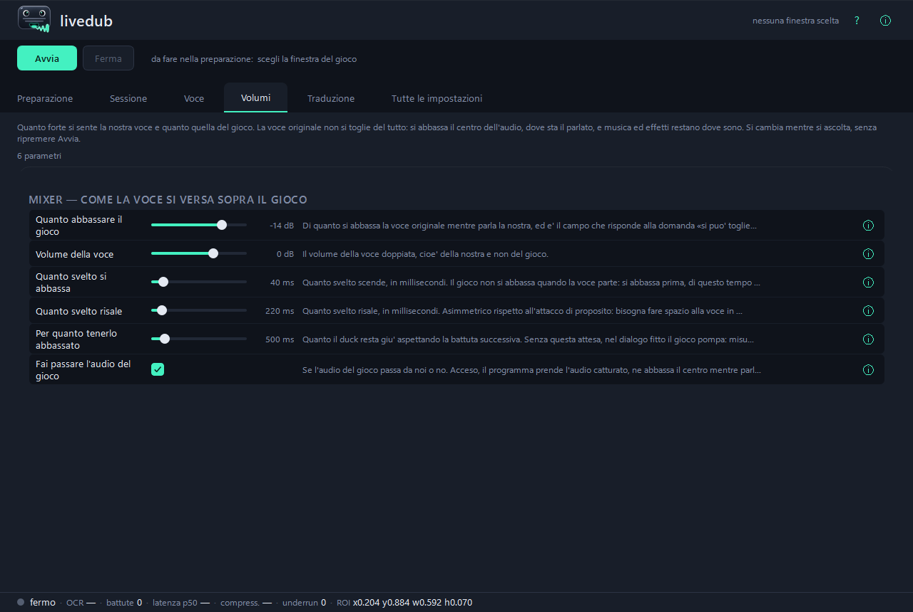
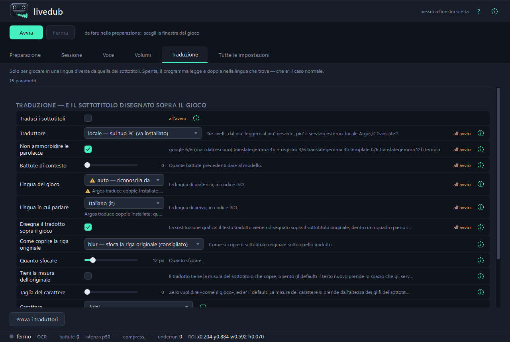
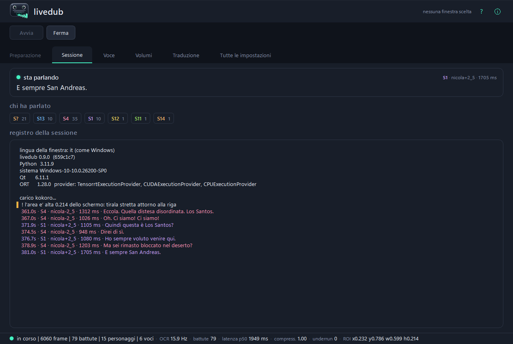

Legge i sottotitoli a schermo mentre giochi, capisce dall'audio chi sta parlando, sintetizza la battuta con la voce di quel personaggio e la mixa sopra il gioco.
Tutto in locale, su Windows. Nessun account, nessun server, niente da estrarre dal gioco: guarda lo schermo e suona nelle cuffie, come un giocatore.
Alzate il volume: nel README di GitHub questi non si possono suonare, ed è il motivo per cui questa pagina esiste.
[nicola] e
[nicola-2_5] sono la stessa voce a due altezze.
Non c'è niente da configurare prima: si apre e si segue.
La finestra è già nella lingua in cui usi Windows — 41 cataloghi più l'italiano del sorgente. Arabo, ebraico, persiano e urdu ribaltano anche il verso della finestra.
Si apre da sola la prima volta e si rivede col ?. Dove
può, controlla invece di raccontare: conta le schede audio che ci
sono, chiede a ONNX Runtime se la CUDA c'è davvero invece di dedurlo,
misura l'altezza dell'area con la regola vera.
È il sesto passo, e non è una comodità: un modello che manca non dà errore. I programmi si installano una volta, i modelli no — si scaricano alla prima richiesta, e se non arrivano la catena ripiega su qualcosa di più leggero e va avanti. Senza questo passo staresti ascoltando il ripiego senza saperlo. Il banco misura, sceglie, scarica quello che manca, e non installa nessun programma: se ne manca uno ti dà la riga esatta da incollare.
Si cattura una finestra sola, non lo schermo: così nel fotogramma che va all'OCR non entra nient'altro, nemmeno le nostre finestre. Il gioco deve stare in finestra o senza bordi, non a schermo intero esclusivo.
Due secondi col mouse. L'area è relativa alla finestra: se sposti il gioco, l'area lo segue.
Da lì il programma legge, capisce chi parla, sintetizza e mixa. La voce arriva sempre un po' dopo il sottotitolo, ed è voluto: mezzo secondo serve a capire chi sta parlando prima di scegliere la voce.




Il riquadro passa in ambra quando qualcosa non è arrivato: «nessuna scheda video» è un fatto, «chiesta la GPU e ottenuta la CPU» no, e dargli la stessa spunta verde sarebbe un ripiego silenzioso messo in figura.
Si aprono quando servono.
| scheda | a cosa serve |
|---|---|
| Preparazione | i quattro passi in ordine — è l'unica che serve prima di Avvia |
| Sessione | chi parla, adesso, un colore per personaggio |
| Voce | quale motore, quante voci nel pool, quanto aspettare prima di decidere chi parla |
| Volumi | quanto si abbassa il gioco e quanto si alza la nostra voce, mentre ascolti |
| Traduzione | solo per giocare in una lingua diversa da quella dei sottotitoli |
| Tutte le impostazioni | i 170 parametri, con la ricerca |




I parametri. 170 in tutto; 131 si applicano subito, i 39 che
si leggono solo all'avvio lo dicono invece di fingere. Centoventisette
hanno un ? che spiega cosa fanno, quanto è stato misurato e
cosa si rischia a cambiarli — ed è lo stesso testo che sta accanto al
parametro dentro core/config.py, non una seconda copia che
nessuno aggiorna.
ui.lingua, nella Preparazione, decide cosa c'è
scritto sui bottoni; translate.source e
translate.target, nella Traduzione, decidono cosa viene
detto. Confonderle costa una sessione: si mette en nel
posto sbagliato credendo di aver acceso la traduzione, e la catena continua
a doppiare in italiano.
Solo sessioni dal vivo, col gioco acceso. Nessuno di questi numeri viene dal banco, per il motivo scritto più su.
| Piper (CPU) | Kokoro (CUDA) | |
|---|---|---|
| sessione | runs/2026-08-11_18-31-55 |
runs/2026-08-20_00-01-56 |
| battute doppiate | 44 | 146 |
| latenza p50, dal sottotitolo alla voce | 665 ms | 1290 ms |
| costo della sintesi, p50 (già dentro la latenza, non in aggiunta) | 57 ms | 580 ms |
| compressione del parlato, p50 | 1,00 (nessuna) | 1,00 (nessuna) |
mix.underrun — battute non sentite | 0 | 0 |
Dalla stessa sessione da 146 battute: l'OCR gira a 15,9 letture al secondo (10 724 letture in 675 s di partita), e il ritaglio che l'overlay porta a schermo è vecchio di 9,7 ms al p50, 19,2 nel caso peggiore.
Piper è più veloce e Kokoro articola meglio: sono due scelte, non una scala di qualità, ed è il banco del passo 6 a dire quale delle due regge su una macchina.
Questa riga viene dal banco e non è una latenza: è il costo della sintesi per battuta a parità di tutto il resto, cronometrato al muro restringendo l'affinità del processo. È un limite inferiore al rallentamento di un PC vecchio — simula meno core, non core più lenti.
| core fisici | Piper | SuperTonic |
|---|---|---|
| 8 | ~48 ms | 493–573 ms |
| 6 | 109 ms | 946 ms |
| 4 | 261 ms | 1315 ms — non usabile |
| 2 | 491 ms | 3627 ms |
Cioè: sotto i 6 core fisici, Piper.
Non è uno slogan, è la lista di cosa esce dal computer.
| esce qualcosa? | |
|---|---|
| lettura dei sottotitoli (OCR) | no — OneOCR o PP-OCR, in locale |
| chi parla (impronta vocale) | no — ECAPA, in locale |
| sintesi della voce | no — Piper, SuperTonic o Kokoro, in locale |
traduzione con locale, llm, ollama | no |
traduzione con google | sì, e il programma lo scrive ogni volta |
| scaricamento dei modelli | una volta sola, al primo uso |
L'unico modo di far uscire del testo è scegliere esplicitamente il
traduttore google. Nessuna telemetria, nessun account, nessuna
connessione a un server nostro — non esiste un server nostro.
Funziona bene con: Windows 10 o 11, Python 3.11, 4 core, 8 GB di RAM, nessuna scheda video particolare, motore di voce Piper.
Meglio con: Windows 11, 8 core, 16 GB di RAM e una GPU NVIDIA con almeno 4 GB liberi — motore Kokoro su CUDA (1128 MB di VRAM occupati su una RTX 4060 da 8 GB, mentre GTA V girava) e OCR OneOCR, il riconoscitore dello Strumento di cattura di Windows 11, che sul testo bordato dei giochi legge molto meglio di PP-OCR.
Serve anche un modo di sentire l'audio del gioco senza risentire il proprio doppiaggio in circolo: basta il loopback WASAPI di Windows, già incluso. Voicemeeter non è obbligatorio — serve solo se vuoi tutto in un paio di cuffie sole.
git clone https://github.com/pigro141/livedub.git
cd livedub
powershell -ExecutionPolicy Bypass -File installa.ps1
Lo script verifica di aver ottenuto quello che ha chiesto invece di
dire «fatto»: Python, venv, dipendenze, OneOCR, il provider CUDA vero, i
modelli, e chiude eseguendo la suite di verifica. Quello che manca lo
elenca con il perché e cosa comporta. Senza GPU NVIDIA si aggiunge
-SenzaGpu.
.\.venv\Scripts\python.exe -m tools.ui_qt --profile liveNella finestra: Scegli finestra → Seleziona area → Avvia.
Provato su due: GTA V e Mafia: The Old Country, tutti e due in italiano. Onestamente, questo è quello che si sa.
Serve sempre, per ogni gioco: tirare l'area attorno ai sottotitoli, e togliere la spunta «Ignora i sottotitoli colorati» se il gioco colora il nome di chi parla.
Ha buone probabilità di funzionare subito se il gioco scrive testo chiaro su fondo scuro, in una riga in basso.
È da provare se scrive testo scuro su fondo chiaro: su fotogrammi
costruiti apposta legge ma sporca (Andiamo via di qui. →
Andamo via di quL). Su un gioco vero non l'ha mai provato
nessuno.
Non è previsto: sottotitoli dentro fumetti che seguono il personaggio, o posizioni che cambiano da una battuta all'altra.
livedub è gratuito, gira tutto sulla tua macchina e non ha né account né server: non c'è niente da vendere e nessun dato da raccogliere. Se ti è utile:
☕ Buy me a token!Non sblocca funzioni e non toglie limiti — non ce ne sono.